Clasificación de los motores térmicos
En la mayoría de los casos, el fluido encargado del transporte de energía entre el foco caliente y el foco frío de un motor térmico es calentado por la energía química liberada en una combustión. Así, los motores de los automóviles funcionan impulsados por la combustión de combustibles fósiles (gasolinas y gasóleos).
Atendiendo al lugar donde se realiza dicha combustión, los motores térmicos se clasifican en:
- Motores de combustión externa: la quema del combustible se lleva a cabo fuera del motor y se calienta un fluido que puede ser condensable (agua) o no condensable (gas) que es el que transmite la energía al motor.
- Motores de combustión interna: la combustión se lleva a cabo dentro del propio motor.
Atendiendo a cómo se genera el movimiento dentro de la máquina, los motores térmicos también se pueden clasificar en:
- Motores alternativos: el movimiento se inicia mediante un pistón que recorre un cilindro alternativamente. Normalmente este tipo de motores lleva a acoplado un sistema biela-manivela para transformar ese movimiento alternativo en movimiento circular.
- Motores rotativos: el movimiento se genera directamente en forma circular, produciéndose un giro de la máquina.
- Motores a reacción: el movimiento se genera por reacción (3ª ley de Newton) al expulsar un fluido en el sentido contrario al movimiento deseado.
En las siguientes imágenes tienes ejemplos de motores de cada una de las posibles categorías:
Motores de combustión externa
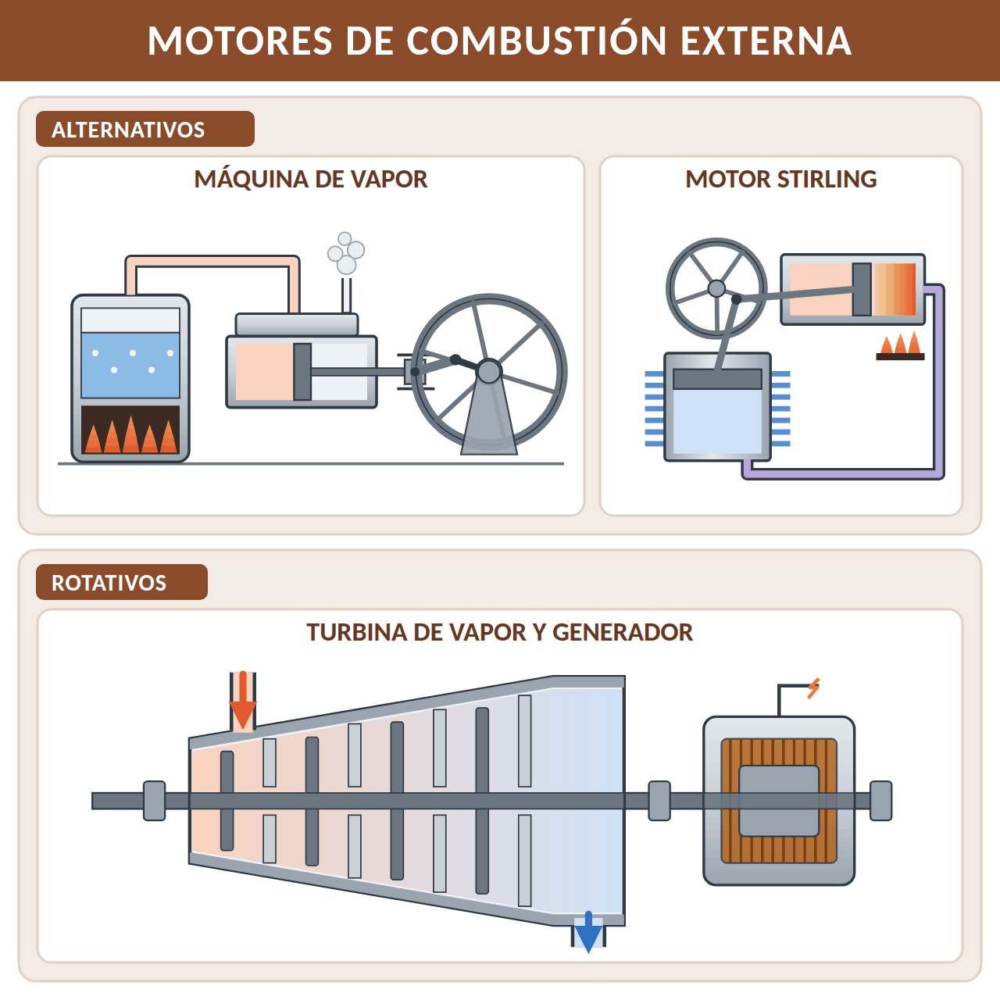
Motores de combustión interna
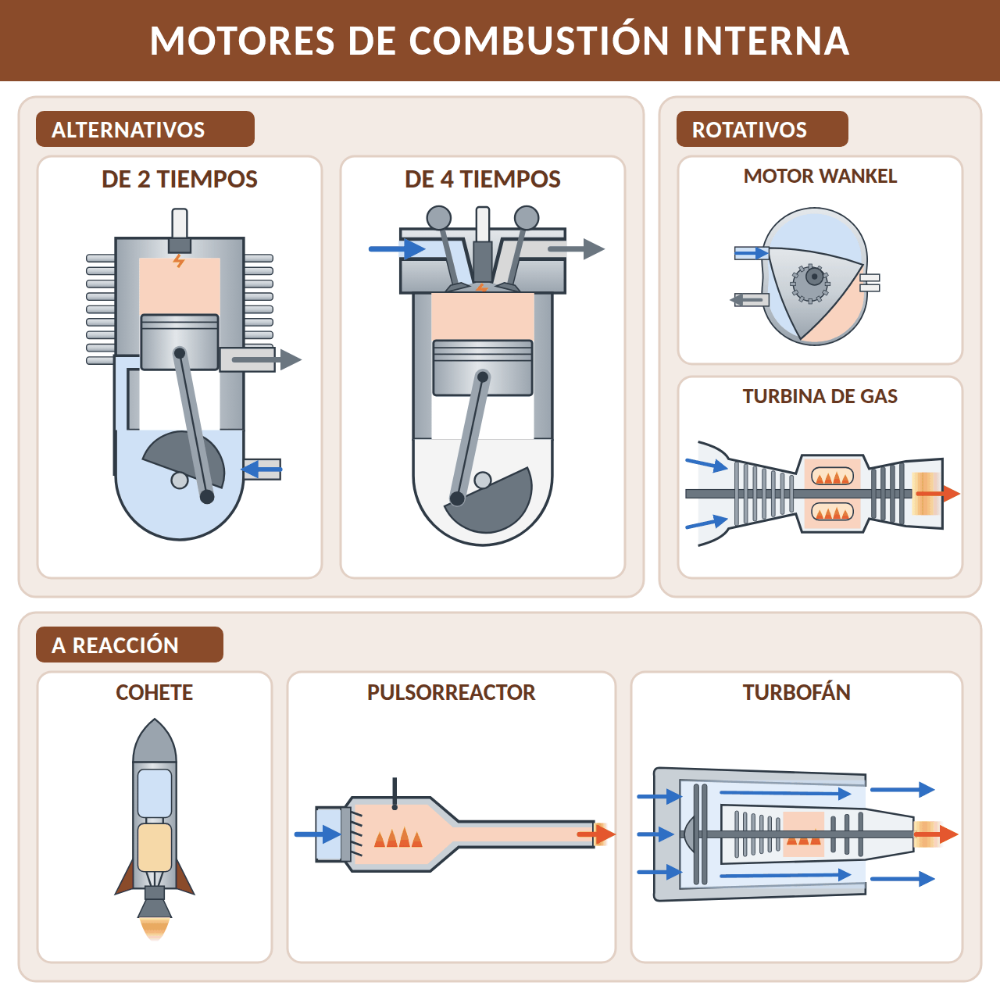
Por su enorme importancia y lo extendido de uso en la sociedad actual, en este curso nos centraremos en los motores de combustión interna alternativos, que estudiaremos con detenimiento en los próximos apartados.
Motores de combustión interna alternativos
Los motores alternativos son los de los vehículos (automóviles, motocicletas, etc.). Están basados en el movimiento alternativo que se produce cuando los gases derivados de la combustión del combustible empujan un émbolo en el interior de un cilindro con movimientos ascendentes y descendentes.
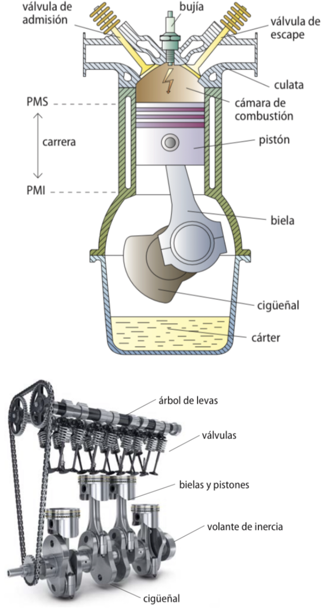
Describimos a continuación los elementos principales que componen los motores.
- Culata: es el elemento que protege la parte superior del motor.
- Bloque: se encuentra entre la culata y el cárter. Es la parte más pesada del motor. En él se encuentran los cilindros, los orificios de refrigeración y lubricación, así como los soportes de diferentes piezas del motor.
- Cárter: es el elemento que protege la parte inferior del motor a la vez que sirve para depósito del aceite lubricante.
- Cilindro: es un hueco con forma cilíndrica practicado en el bloque y en el que se desplaza el pistón.
- Émbolo o pistón: se encuentra en el cilindro y puede desplazarse dentro de él, transformando la energía térmica de la combustión (que se realiza sobre su superficie) en energía mecánica de traslación.
- Cámara de combustión: es el espacio que queda entre la culata y el cilindro cuando el pistón está arriba del todo del cilindro. Se llama así porque es donde se quema el combustible.
- Carrera (C): cada desplazamiento del pistón desde su límite superior hasta el inferior. Los límites del movimiento del pistón, que delimitan la carrera, se denominan puntos muertos, por lo que tenemos dos:
- Punto muerto superior (PMS): punto en el que el pistón está arriba del todo, lo más cerca posible de la culata.
- Punto muerto inferior (PMI): punto en el que el pistón está debajo del todo, lo más cerca posible del cárter.
- Segmentos: son unos aros de un material muy duro y resistente que rodean al pistón y cierran la cámara de combustión con el cilindro, disminuyendo el rozamiento en cada carrera.
- Biela: junto con el cigüeñal, transforma el movimiento rectilíneo del pistón en rotativo.
- Bulón: es el elemento de unión del pistón con la biela.
- Cigüeñal: en él están conectadas todas las bielas del motor y transfiere la energía rotativa a la caja de cambios del motor.
- Válvula de admisión: es la válvula que deja entrar al cilindro la mezcla de aire y combustible (motor Otto) o el aire (motor Diesel).
- Válvula de escape: es la válvula que deja salir los gases de la combustión al exterior.
- Volante de inercia: acumula energía en forma de momento inercia cuando se realiza una combustión, para cederla al motor cuando la precise, dando la sensación de un movimiento continuo. Se encuentra en un extremo del cigüeñal.
Clasificación de los motores de combustión interna alternativos
Estos motores se pueden clasificar atendiendo a dos criterios: la forma en que se produce la combustión del combustible en el cilindro y el número de etapas en las que se divide cada ciclo del motor.
Según el proceso de combustión del combustible
- Motores de encendido provocado (MEP) o motores Otto: se introduce una mezcla gasolina-aire en el cilindro y la ignición tiene lugar al producirse una chispa mediante una bujía.
- Motores de encendido por compresión (MEC) o motores Diesel: se introduce aire en el cilindro y la ignición se produce directamente al inyectar el combustible (gasóleo) por estar el aire caliente debido a haberse comprimido.
Según el número de etapas para completar el ciclo
- Motor de 4 tiempos: el ciclo termodinámico se completa en cuatro carreras del émbolo (por lo tanto, dos vueltas del cigüeñal). En estos motores, la renovación del combustible se controla mediante la apertura y cierre de las válvulas de admisión y escape. Es el que ya hemos visto antes al ver los elementos del motor y es el tipo más complejo de estos motores.
- Motor de 2 tiempos: el ciclo termodinámico se completa en dos carreras del émbolo (por lo tanto, una sola vuelta del cigüeñal). Este motor carece de válvulas y la entrada y salida de gases se realiza a través de las lumbreras (orificios situados en el cilindro). El pistón, dependiendo de la posición que ocupa en el cilindro en cada momento, abre o cierra el paso de gases a través de las lumbreras.
Vemos con más detalle cada uno de estos tipos de motores:
Motor Otto de 4 tiempos
Se trata de un motor de encendido provocado (MEP), de gasolina que sigue un ciclo termodinámico Otto. El ciclo Otto es un ciclo cerrado, que utiliza una mezcla de aire y gasolina y para su ignición tiene la ayuda de una chispa eléctrica producida por el sistema de encendido (bujía).
Este ciclo consta de 4 etapas o tiempos: admisión, compresión, explosión-expansión y escape. Es un ciclo formado por dos adiabáticas y dos isócoras.
Los cuatro tiempos del motor son los que siguen:
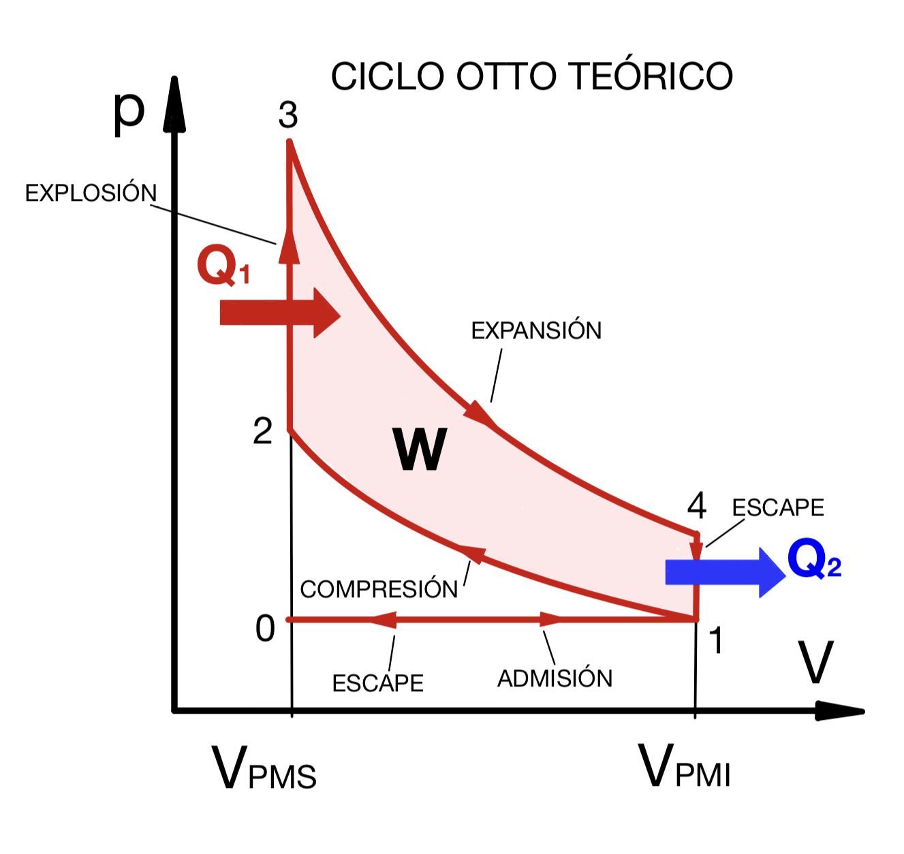
1. Admisión (0→1): el pistón desciende arrastrado por el movimiento del cigüeñal y entra en el cilindro una mezcla aire-combustible a través de la válvula de admisión.
2. Compresión (1→2): el pistón asciende arrastrado también por el movimiento del cigüeñal y comprime el aire y combustible, de forma que aumenta la presión y la temperatura de la mezcla. Este proceso es tan rápido que podemos considerarlo adiabático (Q = 0), porque no da tiempo a que se intercambie calor con el exterior.
3. Explosión-expansión (2→3→4): al alcanzar la mezcla la máxima compresión, salta la chispa en la bujía, explosiona la mezcla y baja el pistón. El movimiento del pistón arrastra el cigüeñal, que realiza el trabajo útil. La ignición de la gasolina es prácticamente instantánea, por lo que se puede considerar el proceso 2→3 como isócoro porque la presión aumenta antes de que dé tiempo al pistón a moverse (ΔV = 0). El proceso 3→4 podemos considerarlo adiabático por la misma razón que el 1→2.
4. Escape (4→1→0): se abre la válvula de escape (la presión cae de forma prácticamente instantánea hasta la presión exterior, en un proceso 4→1 que puede considerarse isócoro) y el pistón sube y expulsa los gases (1→0). La válvula de escape se cierra y la válvula de admisión se abre, con lo que se está en disposición de iniciar un nuevo ciclo.
En estas figuras puedes ver una representación de las posiciones del pistón y las válvulas en cada tiempo:
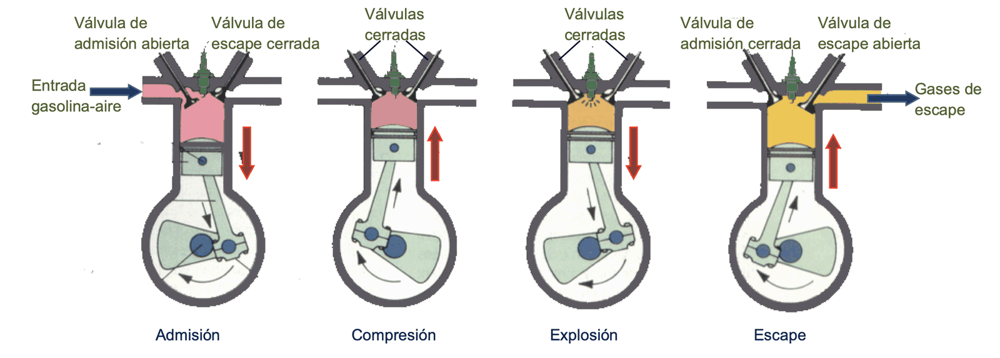
Explora el ciclo con este simulador: reprodúcelo o avánzalo paso a paso y observa a la vez el pistón, las válvulas, el estado del gas y el punto que recorre el diagrama p-V. Con el selector de la parte superior puedes comparar el motor de gasolina con el diésel.
La diferencia entre la energía aportada Q1 y la cedida Q2, se transforma en energía mecánica. Esta se manifiesta durante la carrera de expansión, que es la única en la que se produce trabajo útil y donde el pistón arrastra al cigüeñal. En el resto de las carreras es el cigüeñal el que arrastra al pistón gracias a la acción del volante de inercia, o bien, como se hace por norma, disponer, como mínimo, cuatro cilindros en un motor, combinando su funcionamiento de tal modo que en todo momento por lo menos uno de ellos trabaje.
En este vídeo tienes explicado con animaciones el funcionamiento de este tipo de motores:
Motor Diesel de 4 tiempos
Se trata de un motor de encendido por compresión (MEC), de gasoil que sigue un ciclo termodinámico Diesel. Utiliza aire a presión y la inyección de un combustible pulverizado el cual se inflama por la alta temperatura del aire lograda después de la compresión del aire.
Este ciclo consta de 4 etapas o tiempos: admisión, compresión, explosión-expansión y escape. Es un ciclo formado por dos adiabáticas, una isobárica y una isócora:
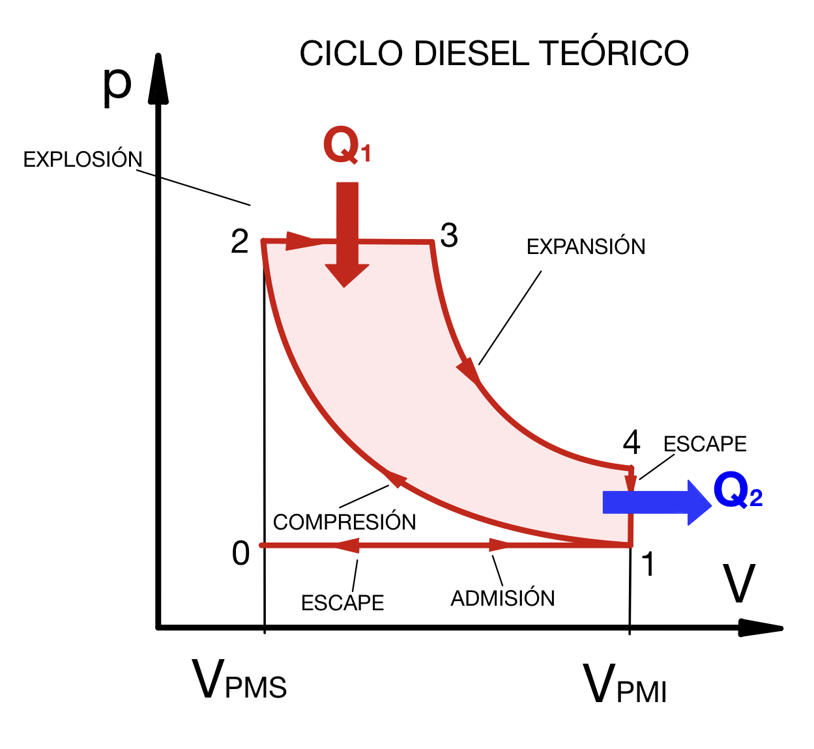
Los cuatro tiempos de este motor son como sigue:
1. Admisión (0→1): el pistón desciende arrastrado por el movimiento del cigüeñal y entra en el cilindro aire a través de la válvula de admisión.
2. Compresión (1→2): el pistón asciende arrastrado también por el movimiento del cigüeñal y comprime el aire a una
elevada presión (40-50 atm y 600ºC). Este proceso es tan rápido que podemos considerarlo adiabático (Q = 0), porque no da tiempo a que se intercambie calor con el exterior, por eso el aire se calienta mucho.
3. Explosión-expansión (2→3→4): al alcanzar el aire la máxima compresión, se introduce el combustible finamente pulverizado mediante una bomba inyectora. Al contacto con el aire caliente, el
combustible se autoinflama y se produce la combustión. Como ahora la combustión se va realizando a medida que el combustible va entrando en la cámara de combustión, el pistón va bajando mientras se inflama la mezcla y por eso la presión no aumenta y podemos considerar el proceso 2→3 como isobárico (a presión constante). La presión de los gases baja el pistón y el movimiento del pistón arrastra el cigüeñal, que realiza el trabajo útil. El proceso 3→4 se puede considerar adiabático por la misma razón que el 1→2.
4. Escape (4→1→0): se abre la válvula de escape (la presión cae de forma prácticamente instantánea hasta la presión exterior, en un proceso 4→1 que puede considerarse isócoro) y el pistón sube y expulsa los gases (1→0). La válvula de escape se cierra y la válvula de admisión se abre, con lo que se está en disposición de iniciar un nuevo ciclo.
Aquí tienes un vídeo con la explicación detallada del funcionamiento de este tipo de motores. Ten en cuenta que se utilizan otras palabras para denominar las diferentes fases, pero las que tienes que conocer y utilizar son las que te he explicado aquí. Las del vídeo no suelen emplearse en España sino en Latinoamérica.
| Ventajas de los motores diesel frente a los de gasolina | Inconvenientes de los motores diesel frente a los de gasolina |
|---|---|
|
|
En este vídeo tienes una comparativa de los dos tipos de motores para fijar ideas:
Motores de 2 tiempos
Tanto los motores de encendido provocado (MEP) como los de encendido por compresión (MEC) también pueden construirse en versiones de 2 tiempos. Los ciclos termodinámicos son los mismos que ya hemos visto (Otto y Diesel), pero se realizan en la mitad de tiempo. Así, en una sola vuelta del cigüeñal (una bajada y subida del pistón) ya hemos completado el ciclo.
Para lograr esto, estos motores deben realizar algunas etapas a la vez, por lo que no utilizan válvulas sino lumbreras. Los conductos de admisión y escape se llaman lumbreras de admisión y escape. Además, hay otra lumbrera que comunica el cárter con el cilindro y que recibe el nombre de lumbrera de transferencia. Estas lumbreras quedan abiertas o cerradas por el movimiento del pistón en el interior del cilindro.
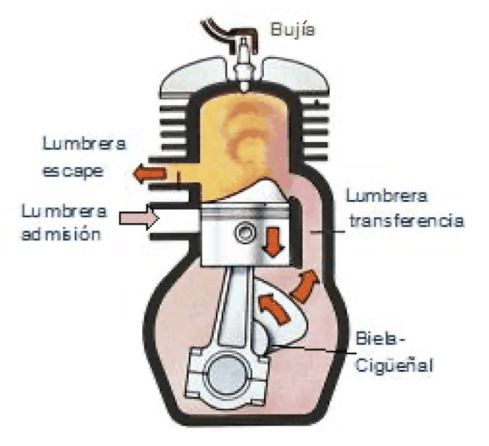
El combustible entra en el cárter, que actúa como una bomba que aspira el combustible a través de la lumbrera de admisión, y lo transfiere al cilindro mediante la lumbrera de transferencia. El cárter no contiene aceite como en los motores de 4 tiempos (saldría a borbotones por las lumbreras y "ahogaría" el motor), por lo que la lubricación se realiza mezclando aceite lubricante con el mismo combustible.
Las dos etapas de estos motores para realizar todas las fases del ciclo son:
1. Admisión – compresión (0→1→2): el pistón asciende arrastrado por el cigüeñal y en este movimiento comprime la mezcla (MEP) o el aire (MEC) que se encuentra en el cilindro. A la vez, descubre la lumbrera de admisión, para que una cantidad nueva de combustible entre en el cárter.
2. Explosión - expansión – escape (2→3→4→0): al llegar el pistón arriba se produce la combustión mediante la chispa de la bujía (MEP) o la inyección de combustible (MEC) y el pistón desciende. Se abre la lumbrera de escape y los gases salen al exterior. También se abre la lumbrera de transferencia y el combustible procedente del cárter entra en el cilindro y desaloja al resto de gases.
Para verlo más claro, aquí tienes un vídeo explicativo:
| Ventajas de los motores de dos tiempos | Inconvenientes de los motores de dos tiempos |
|---|---|
|
|
En este vídeo tienes un resumen de todos los tipos de motores que hemos visto, por si quieres ampliar:
Parámetros geométricos del motor
Vamos a aprender a calcular las magnitudes fundamentales en motores térmicos de combustión interna alternativos. Con estas fórmulas podrás hacer los ejercicios de motores térmicos que tienes al final de esta sección.
Para organizar un poco la información, diferenciaremos entre dos tipos de parámetros y magnitudes:
- Parámetros geométricos: dependen de la geometría del motor, es decir, del tamaño de los cilindros, los pistones, la cámara de combustión, etc.
- Parámetros energéticos: hacen referencia a los intercambios energéticos que se dan en el motor, tanto de tipo térmico como mecánico (potencia, par, rendimiento, consumos, etc.)
Carrera
Ya vimos anteriormente este parámetro. Es la distancia máxima que puede recorrer el pistón a lo largo del cilindro. Es, por tanto, la distancia entre el punto muerto inferior (PMI) y el punto muerto superior (PMS). Por extensión, también se denomina carrera al movimiento del pistón en sí, por lo que, en ocasiones, escucharás hablar de "carrera de admisión" o "carrera de compresión", por ejemplo.
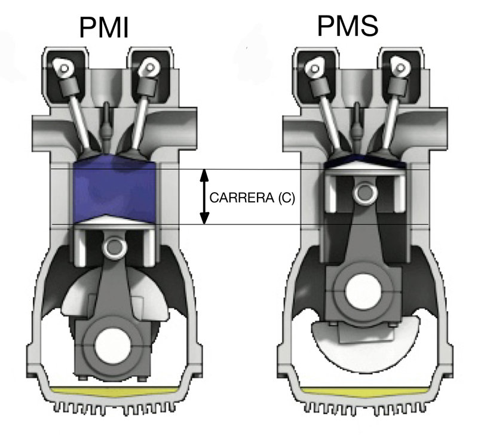
Se suele denotar mediante la letra C (en ocasiones, mediante la letra L; en las colecciones y en la prueba de acceso, mediante la letra s) y se suele expresar en milímetros (mm) (en ocasiones, puede que en cm)
Diámetro del cilindro
Es el diámetro que tiene cada cilindro del motor (si hay varios cilindros, todos tendrán el mismo diámetro).
Se suele denotar mediante la letra D y se suele expresar en milímetros (mm).
En muchas ocasiones, te darán el dato del diámetro y la carrera de un motor de forma conjunta en la forma "DxC". Si, por ejemplo, te dicen que tienes un motor con DxC = 52 x 56 mm, significa que su diámetro es 52 mm y su carrera 56 mm.
La relación entre diámetro y carrera sirve para clasificar a los motores según sea su valor. Se calcula dividiendo el diámetro entre la carrera, ambos expresados en las mismas unidades (por ejemplo, mm). Según su valor, el motor puede ser:
- Motor cuadrado: \(\frac{D}{C}=1\). Es decir, el diámetro y la carrera son iguales.
- Motor supercuadrado o de carrera corta: \(\frac{D}{C}>1\). Es decir, el diámetro es mayor que la carrera.
- Motor subcuadrado o de carrera larga: \(\frac{D}{C}<1\). Es decir, el diámetro es menor que la carrera.
Cilindrada
La cilindrada es el volumen de los cilindros de un motor. Podemos encontrar dos tipos de cilindrada:
- Cilindrada unitaria: es el volumen de cada uno de los cilindros de un motor. Se calcula directamente como el volumen de un cilindro de diámetro D y altura C (la carrera):
\[V_{u}=\frac{\pi \cdot D^{2}}{4}\cdot C\]
- Cilindrada total o cilindrada del motor o simplemente cilindrada: es el volumen total de los cilindros del motor. Simplemente se calcula multiplicando la cilindrada unitaria por el número de cilindros del motor (z, que en las colecciones y en la prueba de acceso verás como Z):
\[V_{T}=z\cdot V_{u}=z\cdot \frac{\pi \cdot D^{2}}{4}\cdot C\]
En esta animación puedes ver la cilindrada de un motor marcada en color naranja:
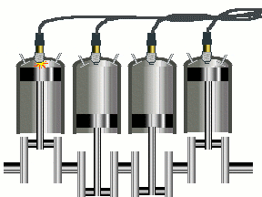
La cilindrada suele expresarse en centímetros cúbicos (cm3, aunque, en ocasiones, puedes encontrarlo como cc). En los motores grandes, es posible encontrar la cilindrada expresada en litros. Así, una cilindrada de 2.6 litros equivaldría a 2600 cm3 (o 2600 cc).
Volumen de la cámara de combustión
Es el volumen mínimo que queda en la cámara de combustión, cuando el pistón está en el PMS.
En esta imagen de un cilindro tienes indicada la cámara de combustión en color rojo:
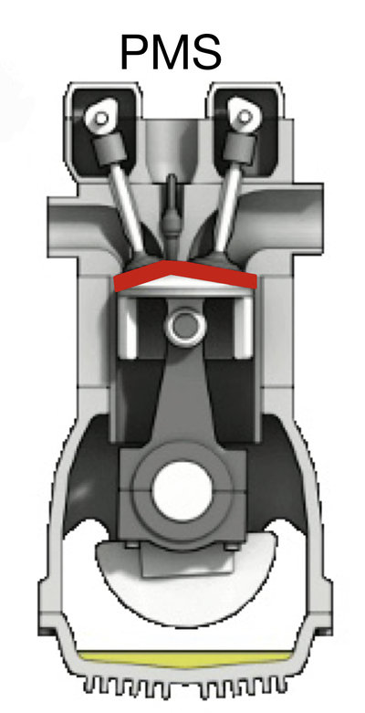
Se suele denotar por Vcc y se suele expresar en cm3.
Relación de compresión
La relación de compresión en un motor de combustión interna es el número que permite medir o expresar la proporción, en volumen, que se ha comprimido la mezcla de aire-combustible (motor Otto) o el aire (motor diésel) dentro de la cámara de combustión de un cilindro. Es decir, el volumen máximo, cuando el pistón está en el PMI (volumen del cilindro más el de la cámara de combustión) entre el volumen mínimo, cuando el pistón está en el PMS (volumen de la cámara de combustión).
En la siguiente figura tienes esos volúmenes marcados en colores para identificarlos mejor:
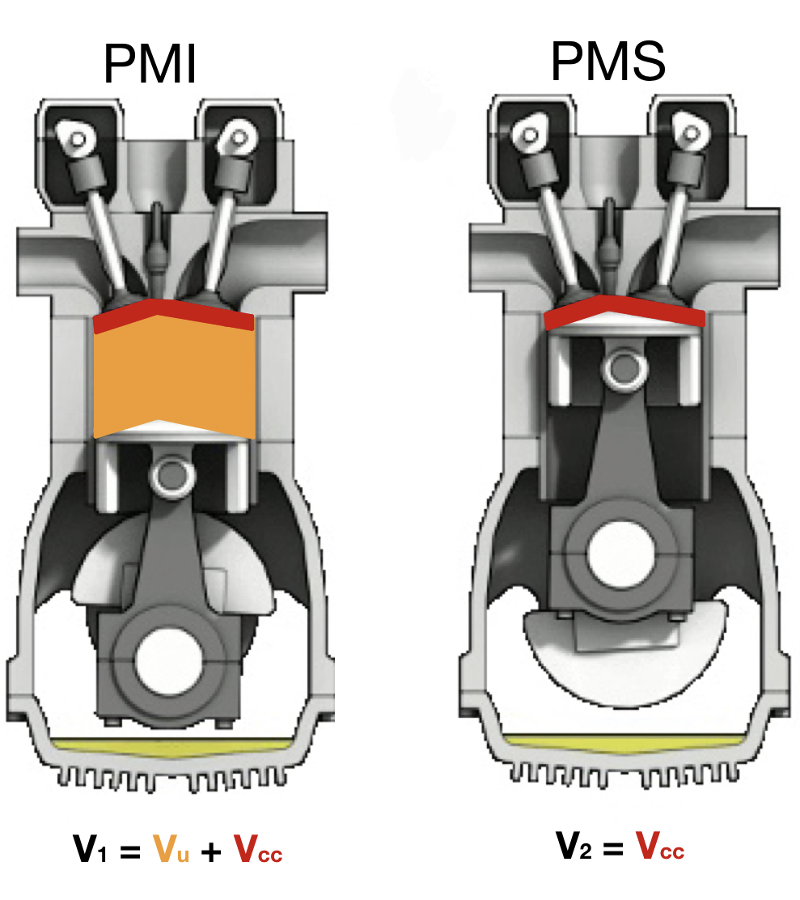
Para calcular la relación de compresión utilizaremos, por lo tanto, esta fórmula:\[r= \frac{V_{1}}{V_{2}}=\frac{V_{u}+V_{cc}}{V_{cc}}=\frac{\frac{\pi D^{2}}{4}\cdot C+V_{cc}}{V_{cc}}\]
Despejando de la expresión anterior se obtiene el volumen de la cámara de combustión a partir de la cilindrada unitaria y de la relación de compresión, que es la forma en la que suele pedirse:
\[V_{cc}=\frac{V_{u}}{r-1}\]
La relación de compresión suele denotarse por r (en ocasiones por Rc o incluso ρ) y es adimensional, puesto que los volúmenes hay que ponerlos en las mismas unidades (usualmente, cm3). Fíjate que la relación de compresión siempre será mayor que 1 y, habitualmente, se expresa en la forma n:1 (donde n es un número mayor que 1). Por ejemplo, te pueden decir que un motor tiene una relación de compresión de 15 o bien de 15:1. Es exactamente lo mismo.
Importancia de la relación de compresión en el diseño del motor
La relación de compresión influye directamente en la eficiencia del motor. Mientras mayor sea r, mayor será el rendimiento. En efecto, si expresamos el rendimiento de un motor Otto ideal según el rendimiento de Carnot (en función de las temperaturas), podemos expresarlo en función de la relación entre los volúmenes máximo (V1) y mínimo (V2) del ciclo, es decir, en función de la relación de compresión. Quedaría así:
\[\eta =1-\frac{1}{r^{\gamma -1}}\]
En el caso del motor Diesel la expresión es más compleja y aparece otro parámetro llamado rc (relación de combustión) que es la relación entre el volumen al final de la isobara y el volumen en el PMS, pero la conclusión es la misma: a mayor relación de compresión, mejor rendimiento del motor:
\[\eta =1-\frac{r_{c}^{\gamma }-1}{\gamma r^{\gamma -1}(r_{c}-1)}\]
El problema es que no se puede aumentar indefinidamente la relación de compresión porque eso implicaría hacer un motor muy grande pero, además, en el caso de los motores Otto, no puede ser demasiado grande para que no detone la gasolina antes de tiempo. Mientras mayor sea la relación de compresión, más estaremos comprimiendo el aire o la mezcla en el cilindro y, por tanto, más se calentará (recuerda que el proceso es tan rápido que puede considerarse casi adiabático). Si se calienta demasiado la mezcla en el motor Otto, la gasolina puede arder espontáneamente. Lo vemos con más detalle para cada tipo de motor:
Relación de compresión en motores Diesel (índice de cetano)
Los motores Diesel solo comprimen aire, por lo que pueden tener relaciones de compresión muy altas porque, de hecho, buscan calentar mucho el aire para asegurar que el gasóleo prende nada más entrar en la cámara de combustión. Es normal encontrar relaciones de compresión desde 15:1 y hasta 20:1.
Existe un índice en los gasóleos, denominado número o índice de cetano, que indica el tiempo que transcurre entre la inyección del combustible y su ignición. A mayor índice de cetano, más rápido inicia la ignición y mayor calidad tiene el gasóleo. Si el número de cetano es demasiado bajo, la combustión es inadecuada y da lugar a ruido excesivo, aumento de las emisiones, reducción en el rendimiento del vehículo y aumento de la fatiga del motor. Humo y ruido excesivos son problemas comunes en los vehículos a gasóleo, especialmente bajo condiciones de arranque en frío.
En España, los gasóleos comercializados tiene todos un número de cetano superior o igual a 51 por ley (suelen oscilar entre 51 y 55) y son adecuados para las relaciones de compresión de cualquier vehículo diésel que se comercialice.
Relación de compresión en motores Otto (índice de octano)
Los motores Otto comprimen una mezcla que ya incluye gasolina, por lo que, si su relación de compresión es muy alta, podría ocurrir que la gasolina detonara antes de llegar al PMS por calentarse demasiado. Esto provocaría pérdida de potencia del motor (la explosión "frena" la carrera de compresión) y daños en las cabezas de los pistones. Los motores de gasolina no suelen superar las relaciones de compresión de 10:1.
En las gasolinas existe un número o índice de octano, que mide la capacidad antidetonante del combustible cuando se comprime dentro del cilindro de un motor. Mientras mayor sea el número de octano, más podremos comprimir el combustible antes de que detone.
En España se comercializan gasolinas con dos tipos diferentes de número de octano:
- Número de octano 95: es apta para la relación de compresión de la mayoría de los vehículos que se comercializan, pero no de los que tienen relaciones especialmente altas (algunos vehículos de gran potencia)
- Número de octano 98: es apta para absolutamente todos los vehículos de gasolina que se fabrican, independientemente de su relación de compresión.
Debes tener claro que el índice de octano solo indica si la gasolina aguanta más sin detonar o no. No tiene absolutamente nada que ver con el poder calorífico o la energía que se puede extraer del combustible. Las prestaciones de un motor normal con gasolina 95 son exactamente las mismas que con gasolina 98, pero esta última es más cara.
Los fabricantes de vehículos indican si sus motores necesitan gasolina de 98 o no. Si no la necesitan (la gran mayoría) repostar ese tipo de combustible sólo serviría para gastar más dinero, porque el rendimiento (consumo) y la potencia del motor serán exactamente igual. Así pues, es mejor repostar 95.
Por el contrario, si repostamos gasolina 95 en un motor que requiere 98 por su relación de compresión, se producirán detonaciones (se oye una especie de campaneo que suele denominarse "picado de biela") que harán perder potencia al motor, además de dañarlo a largo plazo.
Parámetros energéticos del motor
Energía y potencia térmicas absorbidas del combustible
Energía térmica
Estos motores obtienen su energía de la ignición del combustible (ya sea gasolina o gasóleo), por lo que la energía obtenida dependerá del poder calorífico del combustible y de la cantidad (masa) que quememos:
\[E_{ABS}=m\cdot P_{C}\]
Donde:
- EABS: energía térmica absorbida por el motor al quemar el combustible (usualmente en kJ o en kcal)
- m: masa de combustible quemada (en kg)
- PC: poder calorífico del combustible (usualmente en kJ/kg o en kcal/kg)
El gasóleo tiene un poder calorífico algo mayor que la gasolina (alrededor de un 13 % más), siendo esa una de las razones por las que los motores diésel consumen menos que los de gasolina.
Potencia térmica
La potencia térmica es, simplemente, el ritmo al que se obtiene la energía térmica al quemar el combustible. Matemáticamente sería así:
\[P_{ABS}=\frac{E_{ABS}}{t}=\frac{m\cdot P_{C}}{t}=\dot{m}\cdot P_{C}\]
Donde:
- PABS: potencia térmica absorbida al quemar el combustible (W o kW)
- EABS: energía térmica absorbida al quemar el combustible (J o kJ)
- t: tiempo (s)
- m: masa de combustible (kg)
- PC: poder calorífico del combustible (kJ/kg o kcal/kg)
- \(\dot{m}\): gasto de combustible (masa de combustible quemada por unidad de tiempo)(kg/s)
Muy a menudo el enunciado no te dará el consumo en masa sino en volumen (litros a la hora, por ejemplo). Para pasar de uno al otro necesitas la densidad (ρ) del combustible, que el enunciado te dará en kg/l o en kg/dm3:
\[\dot{m}=\dot{V}\cdot \rho \quad \Rightarrow \quad P_{ABS}=\dot{V}\cdot \rho \cdot P_{C}\]
Donde \(\dot{V}\) es el volumen de combustible consumido por unidad de tiempo. Cuidado con las unidades: si el poder calorífico viene en kJ/kg, el gasto tiene que acabar en kilogramos por unidad de tiempo. Y recuerda que 1 l = 1 dm3, así que una densidad en kg/l y otra en kg/dm3 son el mismo número.
Trabajo indicado y potencia indicada
Trabajo indicado
Es el trabajo realizado por el fluido en el cilindro del motor. Sería el área del diagrama del ciclo correspondiente (Otto o Diesel). Si conociésemos la presión media indicada (pmi) del ciclo, el trabajo indicado sería fácilmente calculable con esta expresión:
\[W_{i}=p_{mi}\cdot (V_{PMI}-V_{PMS})=p_{mi}\cdot V_{u}\]
Potencia indicada
Es el ritmo al que se realiza el trabajo indicado. Aquí hay que tener en cuenta una distinción entre los motores de 2 tiempos y los de 4, porque en los 2T se recorre el ciclo completo en una vuelta del cigüeñal, mientras que en los de 4T se necesitan dos vueltas para completar el ciclo.
Así, podemos poner la expresión de la potencia indicada como:
\[P_{i}=\frac{W_{i}}{t}=\frac{W_{i}\cdot n}{60}\cdot \frac{1}{\tau}\]
Donde:
- Pi: potencia indicada (W)
- Wi: trabajo indicado (J)
- t: tiempo (s)
- n: régimen de giro (rpm)
- τ: número de revoluciones por ciclo: vale 1 para motores de 2T y 2 para motores de 4T.
- El 60 no es más que un factor de conversión de minutos a segundo.
Trabajo efectivo
Es el trabajo útil que acaba proporcionando el motor. Es el trabajo indicado, pero descontando algunas pérdidas que se producen en forma de calor por los rozamientos de las partes móviles del motor. Así pues:
\[W_{e}=W_{i}-W_{roz}\]
Donde:
- We: trabajo efectivo (J)
- Wi: trabajo indicado (J)
- Wroz: trabajo de las fuerzas de rozamiento (J)
Par motor
Es la fuerza de giro que es capaz de ejercer el motor, según sea su trabajo efectivo. Se suele denotar por la letra M y siempre suele medirse en newtons-metro (N·m). El par motor se puede calcular a partir del trabajo efectivo con esta expresión:
\[M=\frac{W_{e}}{2\pi \cdot \tau }\]
Donde:
- M: par motor (N·m)
- We: trabajo efectivo del motor en un ciclo
- τ: revoluciones por ciclo (1 para motor de 2T, 2 para motor de 4T)
- 2π: ángulo completo de una vuelta del motor, en rad
En un motor el par máximo se obtiene cuando se consigue inyectar la cantidad máxima de combustible que se puede quemar de forma efectiva.
- A un régimen demasiado bajo de giro, la temperatura alcanzada no es la óptima para que se queme perfectamente todo el combustible y puede incluso ocurrir que salga combustible sin quemar por el escape (sobre todo en vehículos diésel, que muestran un humo negro).
- A un régimen demasiado alto de giro, no podemos aspirar suficiente aire, por lo que tampoco podremos quemar todo el combustible deseado porque faltará oxígeno para hacerlo.
Por lo tanto, hay una zona de funcionamiento en el que el par será bueno, entre ciertas revoluciones mínimas y ciertas máximas, es la denominada "zona de par". Si sacamos el motor de ahí, el par será muy bajo. Por eso estos motores necesitan tener una caja de cambios que permita modificar la relación de transmisión y que el motor gire siempre en la zona de par, aunque las ruedas vayan a diferentes velocidades según la marcha del vehículo.
Sea cual sea la marcha seleccionada, las ruedas siempre girarán más despacio que el motor, por lo que, si recuerdas lo que estudiaste el año pasado sobre los mecanismos, el par en las ruedas será mayor que el par motor y será tanto mayor cuanto mayor sea la desmultiplicación. Por eso, para arrancar o subir pendientes pronunciadas hay que ir en marchas "cortas" y para ir simplemente manteniendo una alta velocidad se puede ir en marchas "largas".
En esta imagen tienes representado gráficamente el par de un motor (en N·m) frente a su régimen de giro (en rpm). Estas gráficas se denominan "características par-velocidad" o "curvas de par" y son creadas por el fabricante al medir el motor en un banco de pruebas. Te he incluido un motor gasolina y uno diésel en la misma gráfica para compararlos:
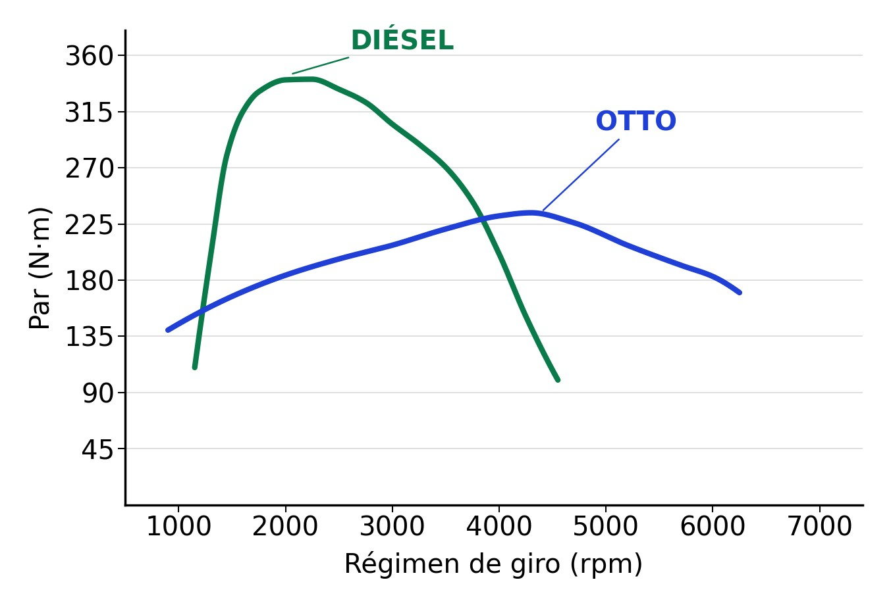
Observa que los motores diésel tienen siempre su zona de par máximo a menores rpm que los de gasolina. Es otra de las razones del menor consumo de los diésel: hacen menos igniciones por minuto que los de gasolina.
Además, el par de los motores diésel es mayor que el de los motores de gasolina. Esto se debe a diversos factores, como su mayor eficiencia (por su mayor relación de compresión), su geometría (suelen tener pistones más estrechos pero con mayor carrera que los gasolina), que suelen tener siempre un turbo (más sobre esto en el próximo apartado) o el mayor poder calorífico del combustible que usan.
Potencia efectiva (útil)
Ya sabes que la potencia es la energía por unidad de tiempo. La potencia efectiva indica el ritmo al que se obtiene el trabajo efectivo:
\[P_{e}=\frac{W_{e}}{t}\]
Si el motor tiene un par M, entonces la potencia efectiva que produce viene dada por la siguiente expresión:
\[P = M\cdot \omega = M \cdot \frac{2\pi\cdot n }{60}\]
Donde:
- P: potencia mecánica del motor (W)
- M: par motor (N·m)
- ω: velocidad angular del motor (rad/s)
- n: régimen de giro del motor (rpm)
Fíjate que la última expresión no es más que un cambio de unidades para pasar del régimen de giro en rpm a la velocidad angular en rad/s (una revolución son 2π radianes y un minuto son 60 segundos). Te lo pongo porque lo normal es que te den (o te pidan) el dato del régimen de giro, no de la velocidad angular.
Aunque la potencia se obtiene en vatios (W) con la anterior fórmula, los valores de potencia de los motores hacen que sea más común expresarla en kilovatios (kW) e, incluso en caballos de vapor (CV). Recuerda que 1 CV = 735,5 W.
Dado que la potencia depende del par y del régimen de giro, podemos esperar que también habrá una zona de régimen del motor en que la potencia sea elevada y, fuera de esa zona, la potencia caerá.
Al igual que en el caso del par, también podemos representar la potencia frente al régimen de giro para obtener las curvas características de potencia o curvas potencia-velocidad. Aquí tienes las de los dos motores anteriores:
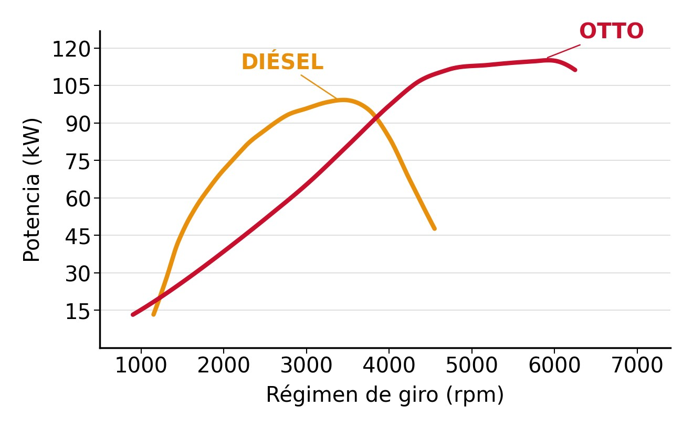
De nuevo la potencia máxima del diésel se obtiene a un régimen de giro menor que la del de gasolina. La diferencia entre las potencias de estos motores no es tan alta como la de los pares porque el motor de gasolina, aunque tiene menos par, lo multiplica por una velocidad de giro mayor con lo que consigue elevar su potencia a base de girar a alta velocidad.Por último, es muy habitual mostrar las características par-velocidad y potencia-velocidad en una misma gráfica para un motor dado. Si lo hacemos, podemos observar que siempre se obtiene el par máximo a un régimen de giro menor que el de la potencia máxima. Esto es para todos los motores, independientemente de si son MEC o MEP.
Las curvas características del motor de gasolina son:
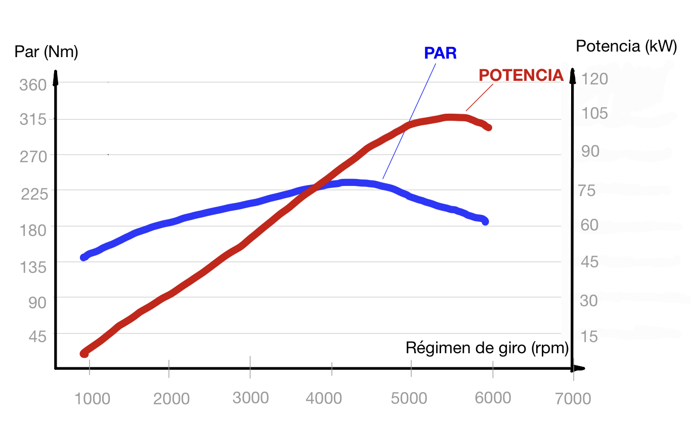
Y las del motor de gasóleo son:
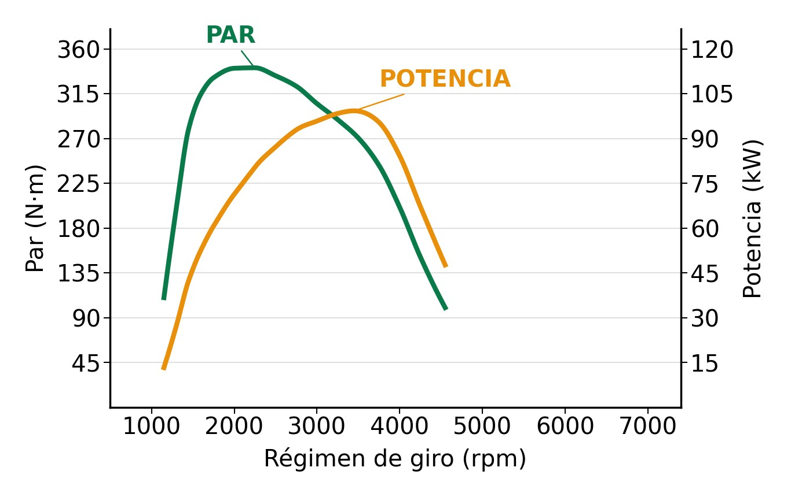
Consumo específico
Es un parámetro muy utilizado en este tipo de motores y nos indica la relación entre el combustible quemado (consumido) en gramos (g) y la energía mecánica obtenida en el eje del motor, en kWh (fíjate que ahora no es energía química de la combustión sino ya la energía útil del motor). Se calcula así:
\[C_{esp}=\frac{m}{P\cdot t}=\frac{\dot{m}}{P}\]
Donde:
- Cesp: consumo específico (g/kWh). En las colecciones y en la prueba de acceso aparece como Gesp.
- m: masa de combustible quemada (g)
- P: potencia mecánica del motor (kW)
- t: tiempo de funcionamiento (h)
- \(\dot{m}\): gasto de combustible (g/h)
Es importante resaltar que el consumo específico nos relaciona la parte mecánica con la térmica del motor. Es una manera indirecta de darnos el rendimiento de un motor. Nos está diciendo cuánto combustible necesitaremos quemar para que el motor nos proporcione una energía mecánica determinada.
Rendimiento del motor
El rendimiento es un parámetro básico de los motores. Al igual que el consumo específico, es lo que nos relaciona la parte mecánica con la térmica del motor.
Recordando la definición de rendimiento de un motor térmico genérico (trabajo útil dividido entre calor absorbido del foco caliente), el rendimiento de estos motores podremos calcularlo así:
\[\eta =\frac{W_{e}}{E_{ABS}}=\frac{P}{P_{ABS}}=\frac{P}{\dot{m}\cdot P_{C}}\]
Dividiendo entre el tiempo arriba y abajo, lo ponemos en función de las potencias que son más utilizadas que los trabajos y energías. La última expresión es útil tenerla porque está en función de parámetros muy utilizados en los motores (potencia, gasto de combustible y poder calorífico).
Ese es el rendimiento global del motor. En realidad, puede haber varios rendimientos en un problema de motores. Recuerda que hay varias fuentes de pérdidas:
- Pérdidas en la conversión de energía térmica a mecánica (rendimiento indicado ηi): son las pérdidas inherentes del ciclo termodinámico, que hacen que el trabajo indicado sea menor que la energía absorbida del foco caliente (las que ya vimos en la sección anterior al calcular el rendimiento de los motores térmicos genéricos).
- Pérdidas por rozamientos en el propio motor (rendimiento efectivo ηe): son las pérdidas en las mismas piezas del motor, que hacen que el trabajo efectivo sea menor que el trabajo indicado.
- Pérdidas en la transmisión del vehículo (rendimiento de la transmisión ηt): son pérdidas por rozamientos y vibraciones en los ejes y engranajes de la caja de cambios y que hace que no llegue todo el trabajo efectivo del motor a las ruedas sino que llegue menos. No es una pérdida del motor en sí, por lo que normalmente no tendremos que tenerlas en cuenta, pero puede que en algún problema nos den este rendimiento también.
Como siempre que hay varias fuentes de pérdidas, el rendimiento es el producto de los rendimientos parciales que intervengan. Fíjate bien en cuáles entran: el rendimiento del motor que hemos definido arriba, \(\eta=W_{e}/E_{ABS}\), es el producto de los dos primeros, porque la transmisión no es una pérdida del motor. La transmisión solo entra cuando el problema pregunta por lo que llega a las ruedas:
\[\eta_{motor}=\eta_{i}\cdot \eta_{e} \qquad \eta_{ruedas}=\eta_{i}\cdot \eta_{e}\cdot \eta_{t}\]
Si se desprecian las pérdidas de alguno de estos tipos, sería equivalente a considerar ese rendimiento como la unidad, por lo que no alteraría el producto final.
Motores turbo. Sobrealimentación
La necesidad de aumentar la potencia de un coche sin tener que aumentar la cilindrada, hace necesaria una sobrealimentación de combustible.
Aumentar la potencia depende tanto de la cantidad de combustible quemado (energía) como del número de revoluciones, pero tanto en motores Diesel como en los de gasolina, por mucho que aumentemos el combustible que hacemos llegar al interior de la cámara de combustión, no conseguimos aumentar su potencia si este combustible no encuentra aire suficiente para quemarse.
Así pues, solo conseguiremos aumentar la potencia, sin variar la cilindrada ni el régimen del motor, si conseguimos colocar en el interior del cilindro un volumen de aire (motores Diesel) o de mezcla (aire y gasolina para los motores de gasolina) mayor que la que hacemos entrar en una "aspiración normal".
Para poder meter más aire en el mismo volumen de motor, el aire se introduce comprimido a alta presión. Para ello se intercala en el circuito de entrada un compresor, accionado por una turbina movida por los gases de escape. Este dispositivo recibe el nombre de turbocompresor, pero suele abreviarse como "turbo".
A la salida del compresor los gases salen a elevadas presión y temperatura, que luego van a aumentar aún más en la fase de compresión del motor. En el caso de un motor de gasolina esto produciría la detonación prematura de la gasolina contenida en la mezcla, por esto, a la salida del compresor se instala un intercambiador de calor que enfría los gases antes de que penetren en el motor, a este dispositivo se le llama “intercooler”.
El intercooler es un radiador que puede ser enfriado por el aire que incide sobre el coche en su marcha normal o puede usar parte del líquido refrigerante del vehículo para enfriarse. En este esquema puedes ver dónde se colocan habitualmente tanto el turbocompresor como el intercooler en un motor:
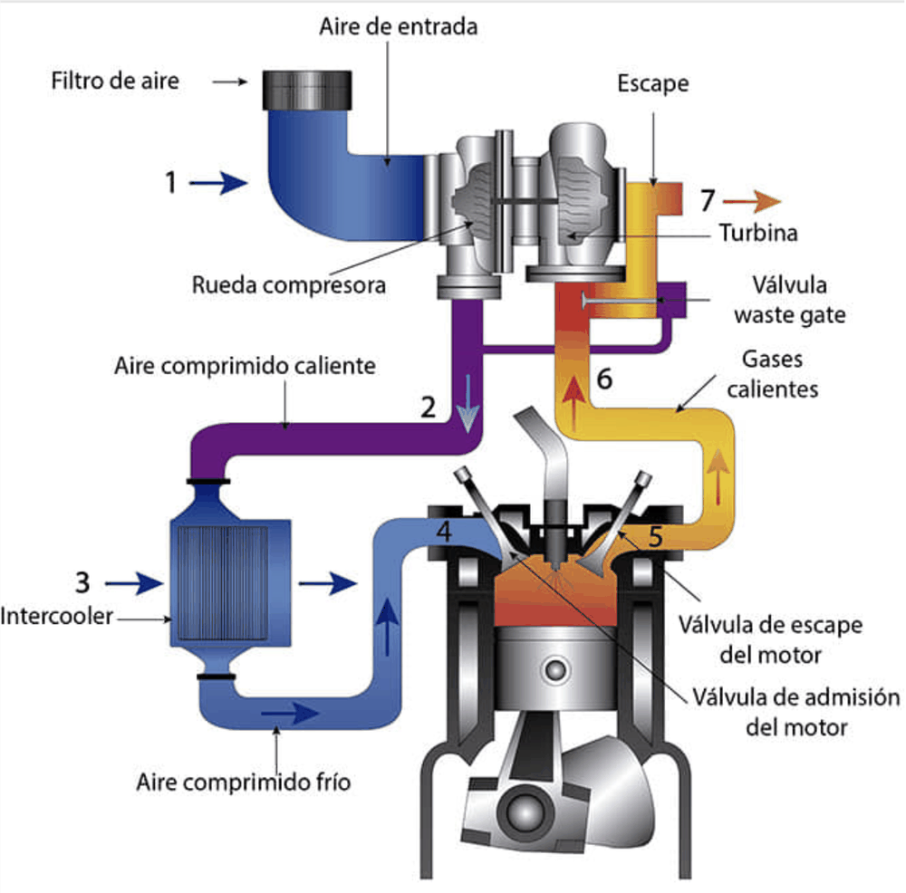
Repaso: tipos de motores
Clasifica cada motor según cómo genera el movimiento: con un pistón que recorre un cilindro (alternativo), directamente en forma de giro (rotativo) o expulsando un fluido en sentido contrario al movimiento (a reacción).
Repaso: elementos del motor alternativo
Relaciona cada elemento del motor alternativo con su función.
Relaciona cada elemento del motor alternativo con su función.
", "showMinimize": false, "itinerary": {"showClue": false, "clueGame": "", "percentageClue": 40, "showCodeAccess": false, "codeAccess": "", "messageCodeAccess": ""}, "cardsGame": [{"url": "", "x": 0, "y": 0, "author": "", "alt": "", "audio": "", "color": "#000000", "backcolor": "#ffffff", "eText": "Culata", "urlBk": "", "xBk": 0, "yBk": 0, "authorBk": "", "altBk": "", "audioBk": "", "colorBk": "#000000", "backcolorBk": "#ffffff", "eTextBk": "Protege%20la%20parte%20superior%20del%20motor"}, {"url": "", "x": 0, "y": 0, "author": "", "alt": "", "audio": "", "color": "#000000", "backcolor": "#ffffff", "eText": "C%C3%A1rter", "urlBk": "", "xBk": 0, "yBk": 0, "authorBk": "", "altBk": "", "audioBk": "", "colorBk": "#000000", "backcolorBk": "#ffffff", "eTextBk": "Protege%20la%20parte%20inferior%20del%20motor%20y%20sirve%20de%20dep%C3%B3sito%20del%20aceite%20lubricante"}, {"url": "", "x": 0, "y": 0, "author": "", "alt": "", "audio": "", "color": "#000000", "backcolor": "#ffffff", "eText": "Segmentos", "urlBk": "", "xBk": 0, "yBk": 0, "authorBk": "", "altBk": "", "audioBk": "", "colorBk": "#000000", "backcolorBk": "#ffffff", "eTextBk": "Aros%20muy%20duros%20que%20rodean%20al%20pist%C3%B3n%20y%20cierran%20la%20c%C3%A1mara%20de%20combusti%C3%B3n%20con%20el%20cilindro"}, {"url": "", "x": 0, "y": 0, "author": "", "alt": "", "audio": "", "color": "#000000", "backcolor": "#ffffff", "eText": "Bul%C3%B3n", "urlBk": "", "xBk": 0, "yBk": 0, "authorBk": "", "altBk": "", "audioBk": "", "colorBk": "#000000", "backcolorBk": "#ffffff", "eTextBk": "Une%20el%20pist%C3%B3n%20con%20la%20biela"}, {"url": "", "x": 0, "y": 0, "author": "", "alt": "", "audio": "", "color": "#000000", "backcolor": "#ffffff", "eText": "Biela", "urlBk": "", "xBk": 0, "yBk": 0, "authorBk": "", "altBk": "", "audioBk": "", "colorBk": "#000000", "backcolorBk": "#ffffff", "eTextBk": "Junto%20con%20el%20cig%C3%BCe%C3%B1al%2C%20transforma%20el%20movimiento%20rectil%C3%ADneo%20del%20pist%C3%B3n%20en%20rotativo"}, {"url": "", "x": 0, "y": 0, "author": "", "alt": "", "audio": "", "color": "#000000", "backcolor": "#ffffff", "eText": "Cig%C3%BCe%C3%B1al", "urlBk": "", "xBk": 0, "yBk": 0, "authorBk": "", "altBk": "", "audioBk": "", "colorBk": "#000000", "backcolorBk": "#ffffff", "eTextBk": "Une%20todas%20las%20bielas%20y%20transmite%20la%20energ%C3%ADa%20rotativa%20a%20la%20caja%20de%20cambios"}, {"url": "", "x": 0, "y": 0, "author": "", "alt": "", "audio": "", "color": "#000000", "backcolor": "#ffffff", "eText": "Volante%20de%20inercia", "urlBk": "", "xBk": 0, "yBk": 0, "authorBk": "", "altBk": "", "audioBk": "", "colorBk": "#000000", "backcolorBk": "#ffffff", "eTextBk": "Acumula%20energ%C3%ADa%20en%20cada%20combusti%C3%B3n%20y%20la%20cede%20despu%C3%A9s%20para%20que%20el%20giro%20sea%20continuo"}], "isScorm": 0, "textButtonScorm": "Guardar la puntuación", "repeatActivity": true, "weighted": 100, "textAfter": "", "version": 2, "percentajeCards": 100, "type": 2, "showSolution": true, "timeShowSolution": 3, "time": 3, "evaluation": false, "evaluationID": "f96bc37c-5aaf-40e4-af65-a544218a46a6", "id": "idevice-1791633734447-77697ugu1", "msgs": {"msgSubmit": "Enviar", "msgClue": "¡Genial! La pista es:", "msgCodeAccess": "Código de acceso", "msgPlayStart": "Pulsa aquí para jugar", "msgScore": "Puntuación", "msgErrors": "Errores", "msgHits": "Aciertos", "msgMinimize": "Minimizar", "msgMaximize": "Maximizar", "msgFullScreen": "Pantalla Completa", "msgExitFullScreen": "Salir del modo pantalla completa", "msgNoImage": "Pregunta sin imágenes", "msgEndGameScore": "Comience la partida antes de guardar la puntuación.", "msgScoreScorm": "La puntuación no se puede guardar porque esta página no forma parte de un paquete SCORM.", "msgOnlySaveScore": "¡Solo puede guardar la puntuación una vez!", "msgOnlySave": "Solo puede guardar una vez", "msgInformation": "Información", "msgYouScore": "Su puntuación", "msgAuthor": "Autoría", "msgOnlySaveAuto": "Su puntuación se guardará después de cada pregunta. Solo puede jugar una vez.", "msgSaveAuto": "Su puntuación se guardará automáticamente después de cada pregunta.", "msgSeveralScore": "Puede guardar la puntuación tantas veces como quiera", "msgYouLastScore": "La última puntuación guardada es", "msgActityComply": "Ya ha realizado esta actividad.", "msgPlaySeveralTimes": "Puede realizar esta actividad cuantas veces quiera", "msgClose": "Cerrar", "msgAudio": "Audio", "msgNumQuestions": "Número de tarjetas", "msgTryAgain": "Necesitas al menos %s% de respuestas correctas para obtener la información. Inténtalo de nuevo.", "msgEndGameM": "Has completado el juego. Tu puntuación es %s.", "msgUncompletedActivity": "Actividad no completada", "msgSuccessfulActivity": "Actividad superada. Puntuación: %s", "msgUnsuccessfulActivity": "Actividad no superada. Puntuación: %s", "msgTypeGame": "Relaciona", "msgCheck": "Comprobar", "msgRestart": "Reiniciar"}}Repaso: los cuatro tiempos del motor Otto
Ordena las etapas del ciclo de un motor Otto de 4 tiempos, empezando por la admisión. Fíjate en el tramo del diagrama p-V que corresponde a cada una.
- Admisión (0→1): el pistón baja y entra la mezcla aire-combustible por la válvula de admisión
- Compresión (1→2): el pistón sube y comprime la mezcla sin intercambiar calor (adiabática)
- Explosión (2→3): salta la chispa y la presión sube sin que el pistón llegue a moverse (isócora)
- Expansión (3→4): los gases empujan el pistón hacia abajo (adiabática); es la carrera que produce trabajo
- Apertura del escape (4→1): se abre la válvula de escape y la presión cae a volumen constante (isócora)
- Escape (1→0): el pistón sube y expulsa los gases quemados